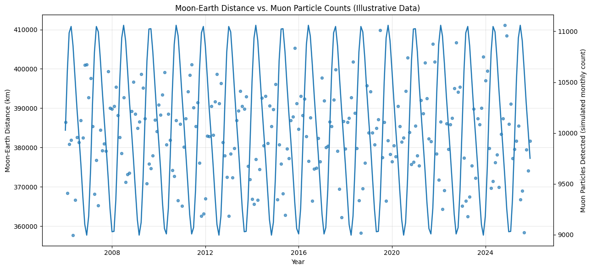
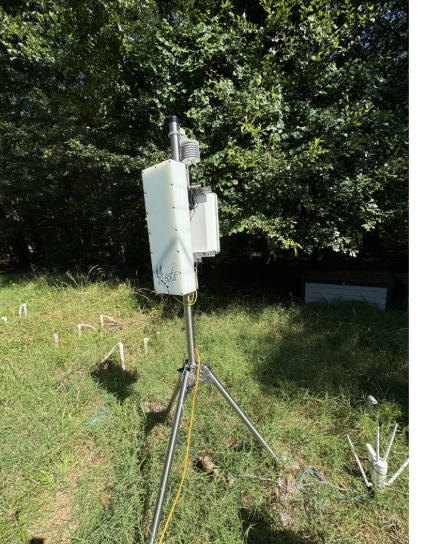

01 / Particle detector research
Research context and role
As a research intern, I assembled and calibrated cosmic-ray detector hardware for atmospheric and environmental physics studies. The work connects physical instrumentation with quantitative data analysis: the quality of the hardware and its calibration influences how confidently measurements can be interpreted.

02 / Particle detector research
Computational analysis
I developed Python scripts to analyze and model 20 years of Earth–Moon orbital-positioning and particle-transmission data. The objective was to understand how geometric and physical conditions influence observed particle transmission over time.
Research analysis
- 01InputsOrbital-positioning and transmission data
- 02PythonOrganize, model and visualize
- 03InterpretEvaluate relationships and patterns
- 04CompareAssess physical consistency

03 / Particle detector research
Particle-based soil moisture detector
I engineered a particle-based soil-moisture detector by evaluating proton transmission rates through soils of varying density. The concept relies on changes in particle transmission through material as a measurable signal, rather than simply using a conventional contact moisture sensor.
Soil density, composition, geometry and moisture content can all affect the measurement. Establishing a calibrated quantitative moisture estimate requires separating these effects and documenting the experimental conditions; no unsupported accuracy figure is claimed here.

04 / Particle detector research
Research takeaway
This experience gave me a foundation in instrumentation, experimental calibration, data modeling and translating physical behavior into a measurable quantity. It also informed my later work on telescope structures, where mechanical effects must be understood in relation to instrument performance.
Related work
The Trinity Observatory project builds on this combination of physics, instrumentation and mechanical engineering.
View all projects